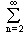
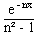
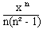
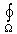
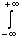
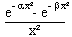

Analiza 2
sept. '95
smer: N, V; asistent: V. Grujic
1. Dokazati:
a) Konvergenciju za x ³ 0 i divergenciju za x < 0 reda . (2 poena)
b) Funkcija ƒ : [0, +¥) ® R definisana sa ƒ(x) = je neprekidna u [0, +¥) i diferencijabilna u (0, +¥). (3+5 poena)
c) Odrediti interval konvergencije i sumirati stepeni red: S(x) = . (3+7 poena)
d) Izracunaj:  ƒ(x)
dx. (10 poena)
ƒ(x)
dx. (10 poena)
2. a) Izracunati zapreminu tela W odredjenog sa z = x² + y², z = 1 - |y|. (12 poena)
b) Izracunati krivolinijski integral: xy dx + (y + z) dy + z dz. (13 poena)
3. Odrediti sve funkcije ƒ : R² ® R za koje treci totalni diferencijal d³ƒ(x,y) = 0 na R². (20 poena)
4. a) Odrediti oblast konvergencije integrala I(a, b) = dx. (8 poena)
b) Izracunati dati integral. (17 poena)